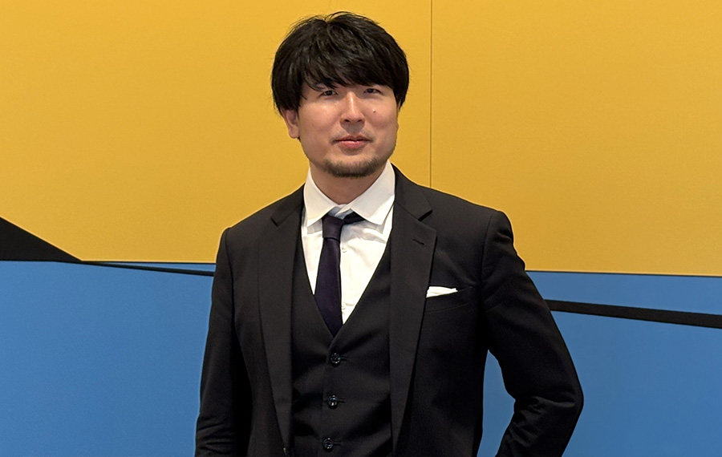
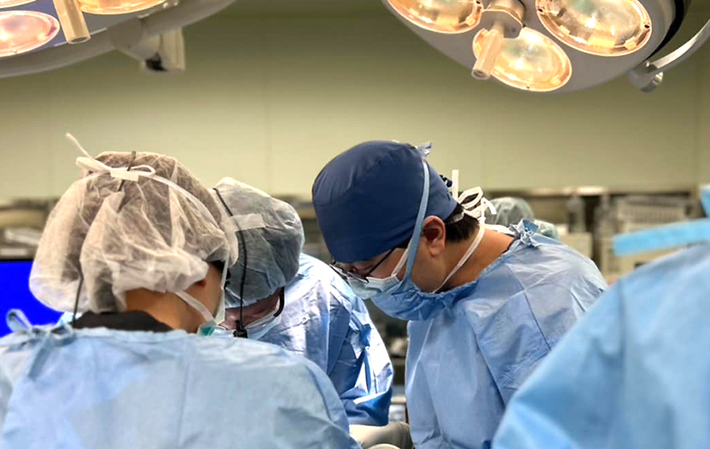
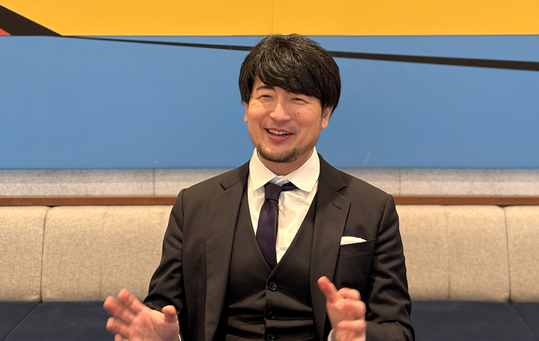
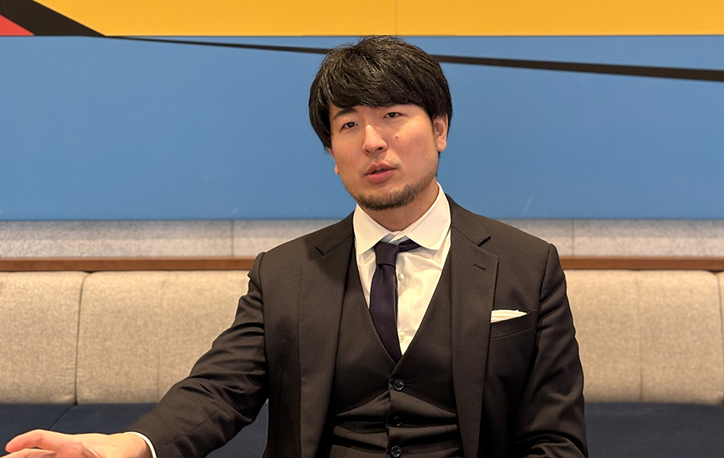

技術立国日本発の｢マルチモーダル救命AIシステム｣で世界を救う

岡田 直己
医師。株式会社fcuro代表取締役CEO
東京大学理科一類中退、慶應義塾大学医学部卒業。
大阪の高度救命救急センターで働く現役救急医・外科医。日本救急医学会AI研究活性化特別委員会委員。第1期未踏AIfrontierprogram政府認定pathfinder（救命）。2020年度未踏アドバンスト事業イノベータ。未踏アドバンスト事業ビジネスアドバイザー。救命現場に開発した技術を実装するため株式会社fcuro（フクロウ）を設立。
── 東大理一を中退してから慶應の医学部に入学し、医師になったのですね。
もともと物理をやろうと東大に入ったのですが、入学直後に知り合った天才みたいな同級生がいまして。物理や数学の世界にはこんな人がいるのかと衝撃を受け、頭だけで勝負するのはやめようと思いました。結果的に卒業後も含めてその同級生ほど頭の良い人には未だに出会ったことはありません。そうして凡人を自覚した私が行き着いたのが、頭脳だけに頼らず体力もモノをいう医学への道でした。体力には自信があったので（笑）。最前線の厳しい環境にいる、救急医や国境なき医師団で働くような医師になろうとイメージしていました。そこで、2年生になるタイミングで東大を退学し、慶應の医学部に入学しました。
医学部の勉強では私の苦手とする暗記が必要になることも多く、留年しかけたこともありましたが、なんとか無事卒業し、最初から心に決めていた「救命救急」の道を歩み始めました。私の尊敬する祖父は日本拳法の上段者で、荒々しさの中にも日本男児として筋の通った考え方を持っていました。救急搬送に迅速に対応し、患者の命を支える救急医の道を目指したのは、祖父の影響があったのかもしれません。
── どういう原体験から、「救急外傷のCT診断課題をAIで解決する」というテーマに行きついたのですか。

徹底的にハードな環境で経験を積みたいと考え、研修先の病院を選ぶ時には給与の高さを目印にして探しました。患者が多く、医師の数が少ないと仕事が極めてハードになります。そういう病院は高給にしないと採用できないのです。そのように見つけた病院で、たった一人の救命救急センター長のもと、救急搬送されてくる多様な症状の患者に対応するという希望通りのハードな日々を過ごしました。
そこで痛感したのは、搬送が重なると対応できる医師の数が圧倒的に足りなくなるということでした。実際、重症患者は意識がないことが多く、訴えが分からない中でより正確に診断するためにCT撮影を行います。このCT画像は全身なら１人につき数百枚となり、骨折や出血など病変ごとに明るさを微調整して１枚ずつ目視で確認します。目の前の患者の処置をしながら一刻を争う状況で読み解かなければならず、重要疾患を見つけるのが間に合わないこともありました。後で落ち着いて時間をかけて読み直せば、そこに死につながる原因がはっきりと存在するのにもかかわらず。絶対に何とかしなければ、何とかできるはずだと思った原体験です。
── 医師が現場でCT診断に課題意識を持ったとしても、自らAIを使ったプロダクトを作って解決しようとするのは普通ではないですね。
東大在学時はニューラルネットワークが再注目され始めた頃で、松尾豊先生によるAIの授業を受けたりしていました。これは後々のベースになったかもしれません。あとは、やはり頭で戦うことを諦めたくなかったのだと思います（笑）。
緊急時に必要なCT画像診断は、実は単なる計算問題に落とし込む ことができます。画像という行列をインプットにして、各疾患というカテゴリの確率スコアをアウトプットする演算なので、思考する余地はあまりないのです。ただ、その演算のパラメータが非常に多いことから、病院や医師のコンディションによって読影の精度が下がることがあります。読影する人の力量というよりも、人手が少ない、急患で立て込んでいる、医師が徹夜続きで疲れ切っているといった病院の状況が影響してしまうのです。「ものすごく情報量の多い単純な計算問題」であるからこそ、AIで代替できると考えました。スピードと精度を担保しながら医師の負担を軽減できれば、処置に専念できますから。
── 現役医師でありながら、どのようにそのアイディアを形にしていったのですか。

未踏の存在を知ったのがひとつのきっかけです。未踏の記事を読んだ私は、そのまま数時間かけて「救急外傷全身CT診断における『重症度評価装置』の開発」のベースとなるメモを書き上げました。実現に向けて、まずは自分で必死にオライリーの技術書を読み込むところから始めたのです。
そんなとき、中高時代の幼馴染であり、のちに共同創業者となる井上君と再会しました。彼は当時ソニーでAIコア技術の研究開発を行っており、画像解析で米粒を数えているというので、「CTの読影も同じ画像だし、白黒画像だから、より簡単だぞ。助けてくれ」と誘いました。そして未踏AIフロンティアプログラムが終わり、プロトタイプを作って井上君と一緒に未踏アドバンストに応募しようとしていたとき、彼から「ソニーの医療事業とぶつかる可能性があり、調整がいるので少し待ってほしい」という話がありました。
私はその時、一人でも続ける覚悟を決めたのですが、その三日後に井上君は「楽しいから、会社を辞めて、一緒に開発する」と言ってきたのです。嬉しいけど、いや、ちょっと待ってくれと（笑）。未踏アドバンストに採択されるという自信はありましたが、もし落ちたら大企業を辞めてまで賭けてくれる井上君に顔向けできないと心から焦り、とっさに井上君のお母さんの顔が浮かびました（笑）。井上くんを食べさせるために、週末に北海道の山奥の病院で泊まり込みの救急アルバイトをしに行った事もありました。結局、無事に未踏アドバンストに採択されたこともあり、その期間中に株式会社fcuroを設立したのです。未踏をきっかけに知り合った方々には、その後開発においても会社経営においてもたくさんの知恵や力を貸していただいております。
── 開発の難しさや具体的な課題はどのあたりにありますか。
医療においても「業務支援」のツール提供などは多くの会社が行っています。一方で医療の本丸ともいえる「診療支援」は敬遠されています。これは訴訟などに巻き込まれた際のリスクが高いこと、規制が厳しすぎることが一因だと思われます 。
しかし、現場にとって何より大事なのは救命率の向上です。だからこそ私たちfcuroは、この困難を認識しながらも、診療支援というど真ん中を攻めます。やっていることは地道な試行錯誤の積み重ねです。最終的には数百枚のCT画像のうち、実際に医師が読むのは数十枚程度でよいというレベルまで持っていきたいのですが、簡単ではありません。実際に自分が働く現場で、同僚たちと開発したプロダクトを事後シミュレーション的に使い、AIの有無による読影時間や精度の違いを分析しながら臨床での導入を進めています。精度や信頼性が極めて重要ですから、陽性であるものを正しく陽性と予測できるリコールは95以上に設定しています。AIのモデル上で閾値をいじっていくわけですが、これを低く設定するとプレシジョン（陽性と判断したものが陽性である割合）が下がってしまいます。こうしたチューニングの繰り返しです。今はまだ数百枚のCT画像を三分の一くらいまでにしか絞れず、読影に必要な枚数の削減率が低いですが、これをどんどん改善していくことで読影時間が短くなり、画像診断、ひいては救急医療の質が飛躍的に上がるはずです。
また、時系列データから診療アウトカム（患者の状態の変化）を予測するモデルなども作っています。現時点では1つのインプットから1つのアウトプットを出すような演算モデルがほとんどですが、最終的にはこれらのモデルをいろいろ組み合わせながら画像と検査データやバイタル情報などを掛け合わせて、部位ごとの重症度や、優先すべき処置をアウトプットできるマルチモーダルシステムの実現を目指しています。まるで自分の信頼している人間の同僚が横でサポートしてくれているかのように柔軟な入出力ができるものにしたいのです。単に計算するだけの機械から「思考する機械」に昇華させ、真にインテリジェントなシステムにするのが目標です。しかし、医療業界特有の制約条件を超えながらこれを実現することは一筋縄では行きません。ビジョンや技術だけでなく、最後までやり切る忍耐力が不可欠だと思っています。
── 特定の国の言語によらないCT画像がテーマであれば、海外展開も可能でしょうか。

まさにご指摘の通り、言語に依存しないため、海外展開は可能であり、大いにチャンスがあります。実は、CT画像という観点では、日本は世界に対して圧倒的にアドバンテージがあると考えています。
日本は世界のなかでも台数や普及率などの点から、患者にとって最もCTへのアクセスが良く 、海外の病院では撮影できないような条件の患者も撮影することができます。そのCTの代表的なものは外傷全身CTですが、これは私たちのルーツであり最も得意とするものです。海外と比べて豊富なCT画像データを持っている日本だからこそ、唯一の外傷診断AIを作り出すことができます。そしてこの診断AIは、結果として豊富な全身のデータをもとに外傷以外の病変に対しても、全身から検索する能力を持ち、世界で最も高い汎用性を実現できると考えています。
── これからのビジョンを教えてください。
システムだけでなく、人も含めた「仕組み全体」をパッケージで普及させたいというのが私のビジョンです。
CTとカテーテル治療、外科手術を初療室一か所でシームレスに行える「ハイブリッドER」を世界で初めて設置したのは私が所属する大阪急性期・総合医療センターの救急診療科であり、未だに日本と、アジアのほんの一部の施設にしか導入されていないシステムです。ここでは実際に、搬送からCT撮影を経て緊急手術開始までの時間短縮を実現しており、重症外傷による救命率も向上させています。これまで、最大のネックとなってきたのはCTの読影です。私たちfcuroはまずこの課題に取り組んでいます。このハイブリッドERシステムに私たちが実現するマルチモーダルAIシステムを実装し、これを使いこなす救命チームの仲間を集めることが次の目標です。これを日本の救命センターに広げ、ハードとソフト、そしてそれを運用するチームとをセットで、海外に展開していきたいと考えています。技術を核として、日本発の理論、ハード、ソフト、人材、それらが一体となって世界へ出ていく。
日本の救命救急が世界を救う、そのような未来を信じています。
企画・取材・編集 清水隆史